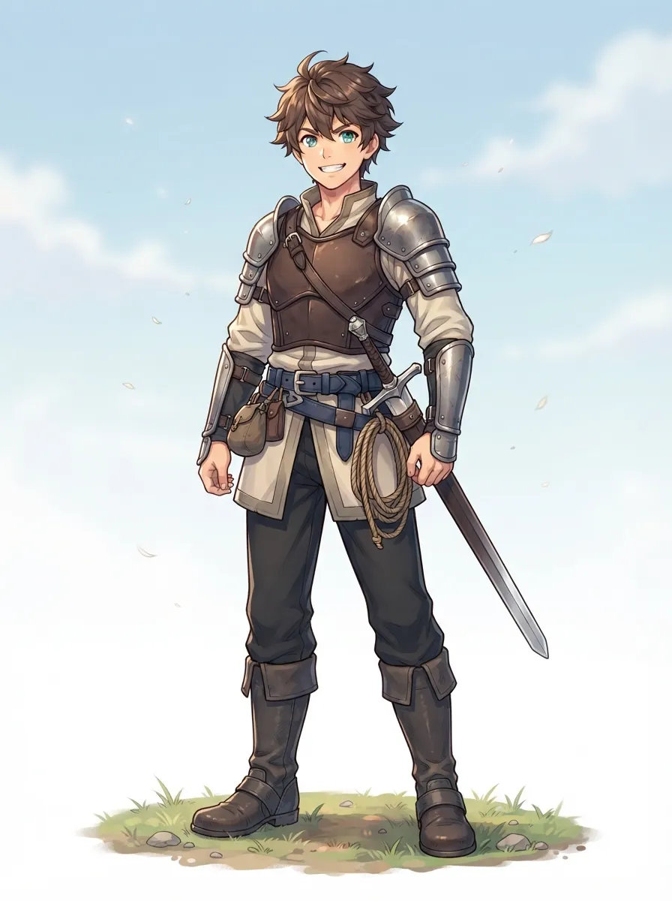
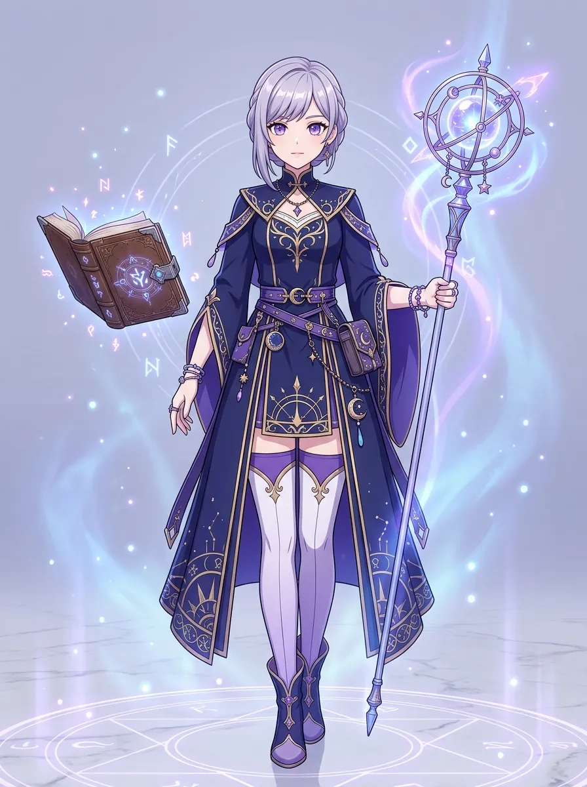
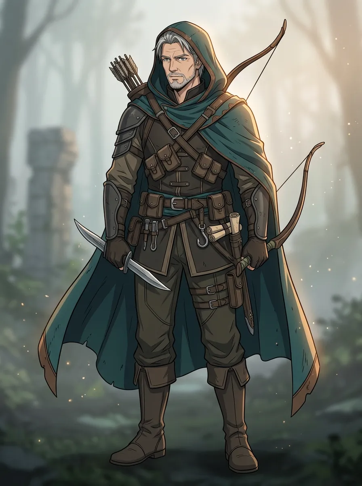

農業・牧畜・料理
草原エリア（青）
農地や牧場を開墾し、遠征の基盤となる食料を安定確保する平穏な大地。
観測されながらも、誰一人踏破し得ない未踏の大地。
地図の先に眠る伝説――「世界の先端」を求め、開拓の時代が幕を開ける。
科学と魔法の発展により遠方の大地が観測されるも、過酷な気候や強大なモンスター、敵対的な「魔族」が進出を阻んできました。
神々の国か、破滅の地か、魔物の王国か――生涯を賭けて挑み、志半ばで倒れた伝説の冒険者が国王へ遺した一冊の「冒険日誌」が、この大規模な開拓の口火を切った。

開拓で世界を変え、変わった世界を足場に、さらに過酷な未踏域へ。
危険に満ちた未知の気候帯へ進み、希少素材や古代遺跡、孤立した集落を発見する。
持ち帰った素材と現地住民との交流で、キャンプを安全な生産・補給基地へ発展させる。
良質なベッドでの休息、耐性を補う温かな料理、鍛えた武具が次の遠征の足腰となる。
整えた拠点を足場に、前回の遠征では耐えられなかった未踏の極限領域を踏破する。
左右にスライドして、開拓の舞台となる五大領域を確かめよう。
農地や牧場を開墾し、遠征の基盤となる食料を安定確保する平穏な大地。
自然由来の魔法素材と巨木が息づく樹海。エルフとの交流が新たな力を開く。
強固な石材で要塞拠点を築き、険峰を貫くショートカットルートを切り拓く。
地底に眠る鉱脈とドワーフの技術。極限に耐えうる屈強な上位装備を鍛造する。
高熱がすべてを拒む極限領域。十分な適応準備を揃えた者だけが最高峰の素材を得る。
種族、生い立ち、得意分野。すべての選択が冒険の可能性を切り拓く。

強靭な身体能力と地形踏破力を誇る青年。家畜の世話で培ったモンスター調教の技に長ける。

近接戦は不慣れだが、抜群の知性と魔導適性を備える。交渉術と経験値獲得ボーナスで急成長する。

数々の遠征を生き抜いた熟練者。直接の白兵戦を避け、罠解除や道具作成で隊を安全に先導する。